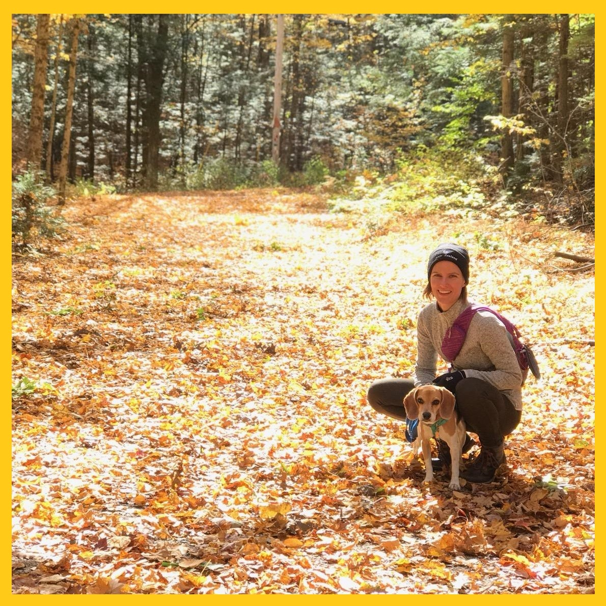
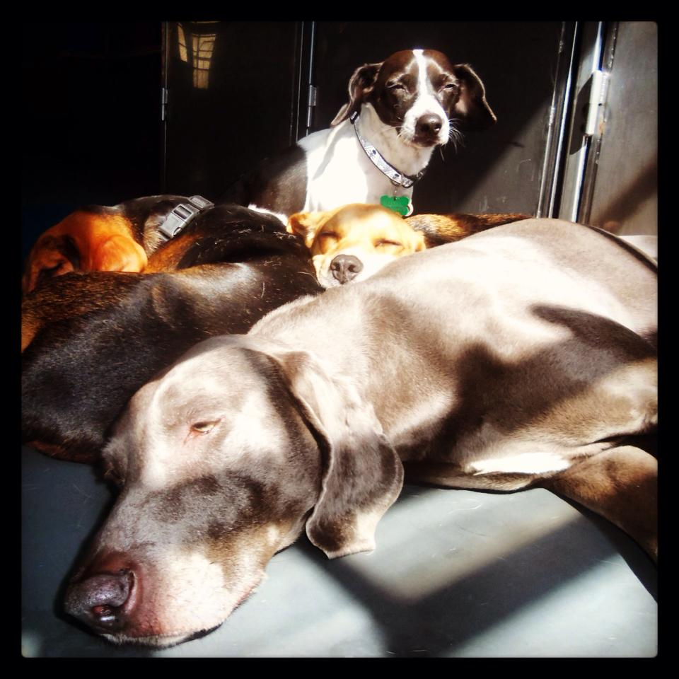
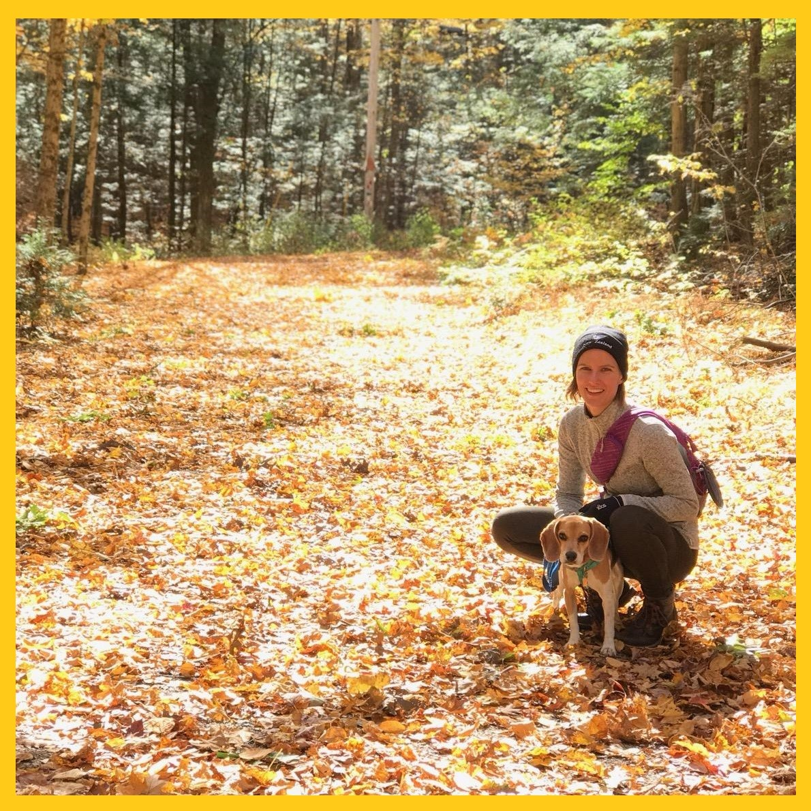
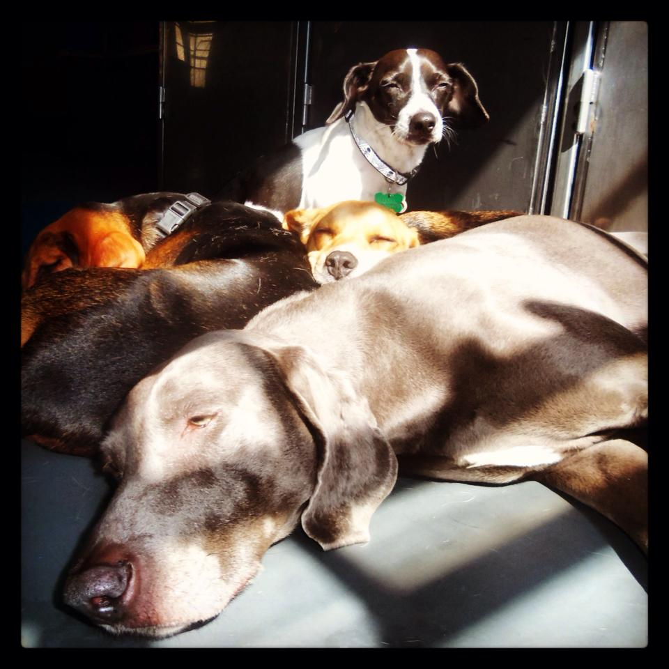

ABOUT
I am a Clare Boothe Luce Assistant Professor of Statistics in the Department of Mathematics & Statistics at Mount Holyoke College. I completed my Ph.D. in Biostatistics at the University of Iowa, College of Public Health in 2019, under the supervision of Grant Brown and Jacob Oleson. I specialize in Bayesian infectious disease modeling and collaborate with the Petersen Laboratory, the Department of Biostatistics at the University of Iowa, and infectious disease researchers in northeastern Brazil. When I am not working on statistics and public health problems, I enjoy hiking with my beagle, Wally, gardening, the ocean, and basically any sport.